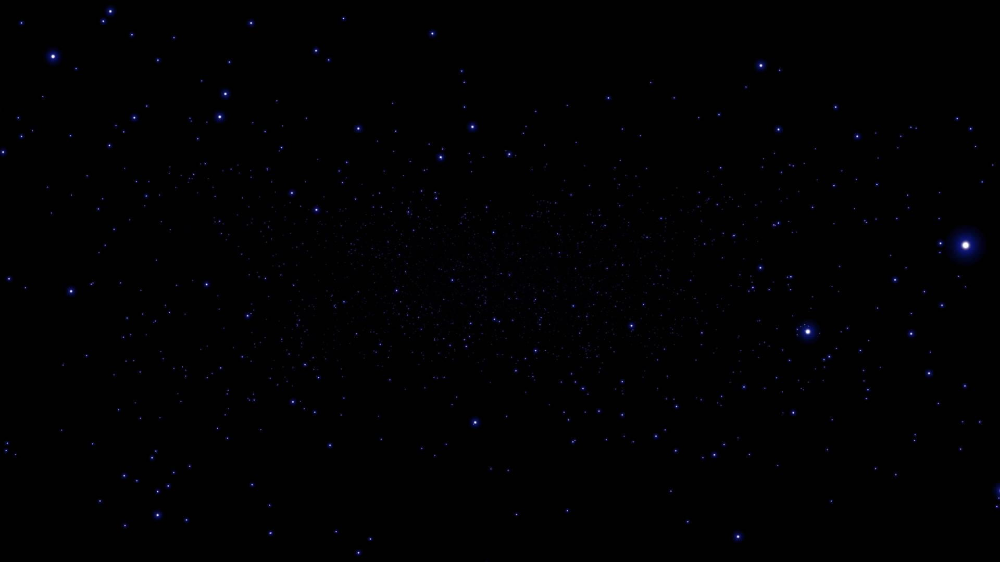

Distancia a la Luna (km):
384,400
Distancia a la Luna (millas):
238,855
Distancia a la Luna (años luz):
0.00004067
Años simulados:
0
Distancia incrementada (km):
0
Año actual:
2024
Años retrocedidos:
0
Incremento por año (cm/año):
3.8
+1000 años
+10000 años
+20000 años
-1000 años
-10000 años
-20000 años
Reiniciar
¡Retrocediendo en el tiempo!